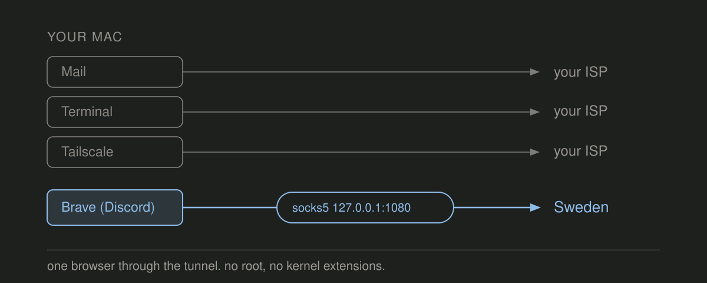

one VPN per browser

I had to choose between turning mullvad on and getting a captcha on every website I visit, or leaving it off so discord still worked.
So I wanted exactly one browser on the VPN, with Discord inside that browser. Everything else stays on the normal connection, including the Tailscale setup I need for work. I ran a hand-made version of that for months and it worked for me, until i forgot how to launch it.
Then one morning the VPN browser stopped loading anything. The WireGuard logs looked perfectly healthy: handshake sent, handshake response received, over and over. It took me embarrassingly long to realize I had rotated the device on Mullvad’s dashboard weeks earlier. A deleted WireGuard key still *handshakes* happily while passing zero traffic. I lost most of that morning to it 😭.
I rebuilt it by hand and then wrote a script so I would never have to do that again. That script is now perbrowser, a brew install away.
macOS can’t tunnel one app
I wanted this browser through the VPN and nothing else on the Mac to change. Have you ever tried doing that natively? macOS has no good answer for it (or so i thought).
VPN apps tunnel the whole machine. I checked mullvad’s and a couple of others: on macOS split tunneling is absent or exclude-only. It lets you pull apps *out* of the tunnel, never put one app in. Stack two VPN network extensions instead, say Mullvad and Tailscale, and they fight over routes and DNS until something breaks. Browser proxy extensions leak WebRTC and share your normal cookie jar. They also assume you already have a proxy endpoint to point at, and getting one is the actual work. That leaves a VM per region, and I’m not booting a VM to open Discord.
wireproxy plus a locked-down Chromium profile
wireproxy speaks WireGuard in userspace and exposes the tunnel as a SOCKS5 proxy on loopback. To macOS (and to Tailscale) wireproxy looks like an ordinary process sending outbound UDP, so your routing table never changes. I let launchd supervise it, so it starts at login and comes back after a crash. The launcher app then opens a dedicated Chromium profile with the proxy flags already applied.
--user-data-dir=/Users/you/.config/perbrowser/discord/profile # separate cookie jar
--proxy-server=socks5://127.0.0.1:1080 # all TCP through the tunnel
--host-resolver-rules="MAP * ~NOTFOUND , EXCLUDE 127.0.0.1" # no local DNS
--force-webrtc-ip-handling-policy=disable_non_proxied_udp # no WebRTC escape hatchI trust flags more than an extension here. A website can’t disable a flag, and there’s no window where the profile exists unproxied. The DNS rule stops Chromium from resolving names itself, so it hands each hostname to the proxy and the lookup happens at the VPN exit. Failing closed on WebRTC costs me Discord voice. Call audio rides UDP, and neither wireproxy’s SOCKS5 listener nor Chromium will carry UDP here, so the call never connects.
perbrowser does all of that, once per instance:
$ perbrowser add discord ~/Downloads/se-sto-wg-001.conf --browser brave
$ perbrowser add work ~/Downloads/us-nyc-wg-301.conf --browser chrome
$ perbrowser list
NAME BROWSER PORT AGENT TUNNEL
discord brave 1080 running 185.65.135.1 SE
work chrome 1081 running 170.62.100.18 USEach instance gets its own tunnel process, port, browser profile, and app in ~/Applications, so “perbrowser - Discord (Brave)” sits in Spotlight next to “perbrowser - Work (Chrome)”. Any WireGuard config with a private key and an endpoint works. Mine came from Mullvad, but Proton’s or your own box’s will do.
What list and doctor check
After that morning I gave perbrowser one rule: never trust a handshake log. perbrowser list and perbrowser doctor check health by fetching your exit IP through the proxy itself. Nothing comes back, you get DEAD in list and FAIL from doctor. Key rotation is the failure I actually hit, so one command recovers from it:
$ perbrowser update-config discord ~/Downloads/new-device.confThat swaps the config file and restarts the agent. Then it checks that traffic is actually flowing again. It also offers to delete the file you just downloaded, because a WireGuard config holds a private key and ~/Downloads is a bad home for one.
doctor catches the rest of it. Unloaded agents, file permissions that drifted, a launcher that lost one of its flags. If the tunnel itself stopped passing traffic it restarts the agent once and checks again. It won’t fix a rotated key, but it tells you which command will.
You can read the whole script in ten minutes
perbrowser holds your WireGuard private keys, so I kept it to one POSIX shell script. You can read the whole thing before you run it. The only thing it downloads is wireproxy, pinned to v1.1.2 and checked against a hardcoded SHA256 before it installs. Everything runs as your own user, and the config files with the private keys in them are mode 600 inside a mode 700 directory.
Get it
brew install portdeveloper/tap/perbrowserIt’s MIT, on GitHub. macOS and Chromium-family browsers only, for now. I’d most love help with Firefox and Linux. Firefox sets proxies in prefs, and anything with profile access can flip a pref while the browser is running. A flag can’t be flipped like that. On Linux I’d be writing systemd user units where this uses launchd.
When it breaks, run perbrowser doctor.
Questions?